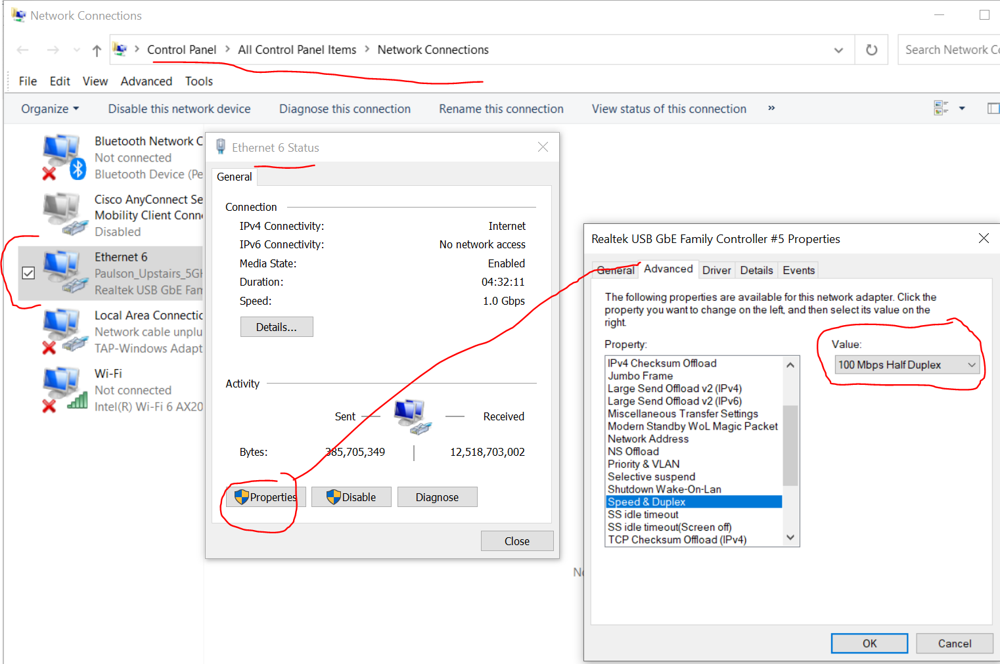
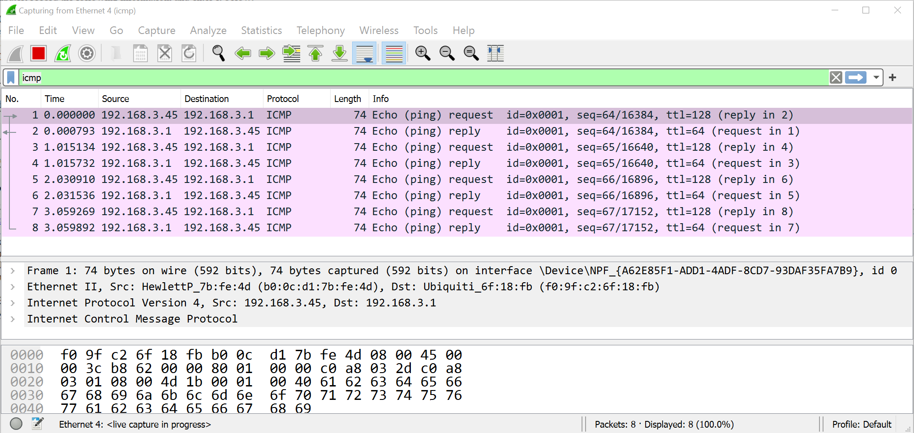
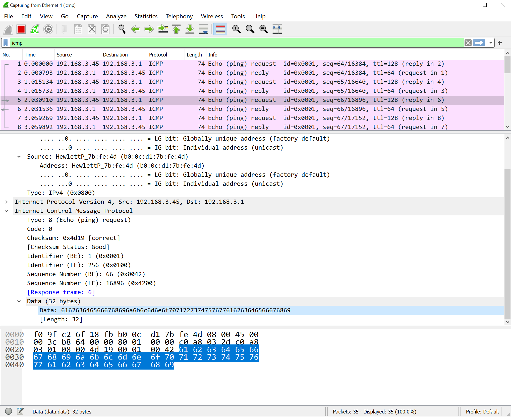
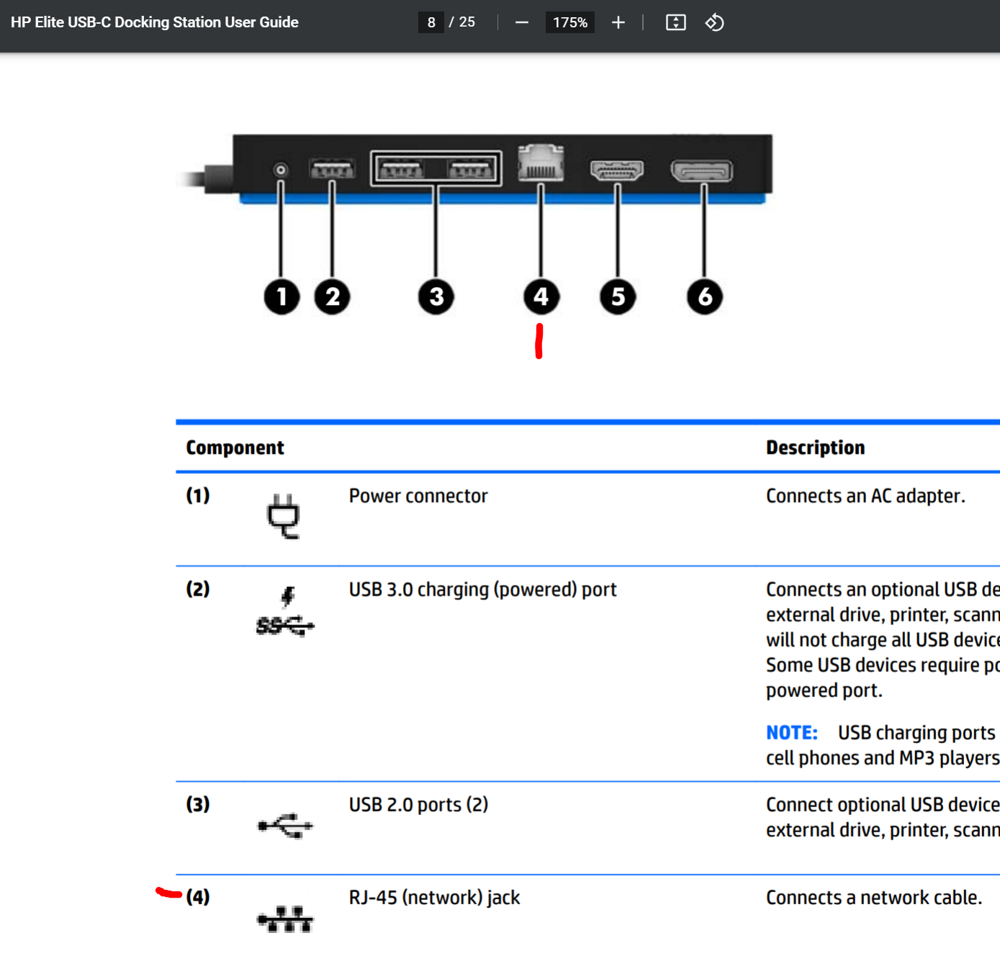
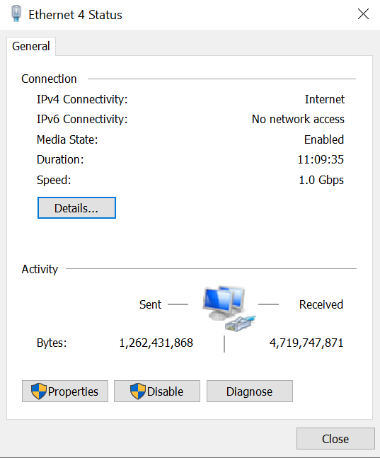
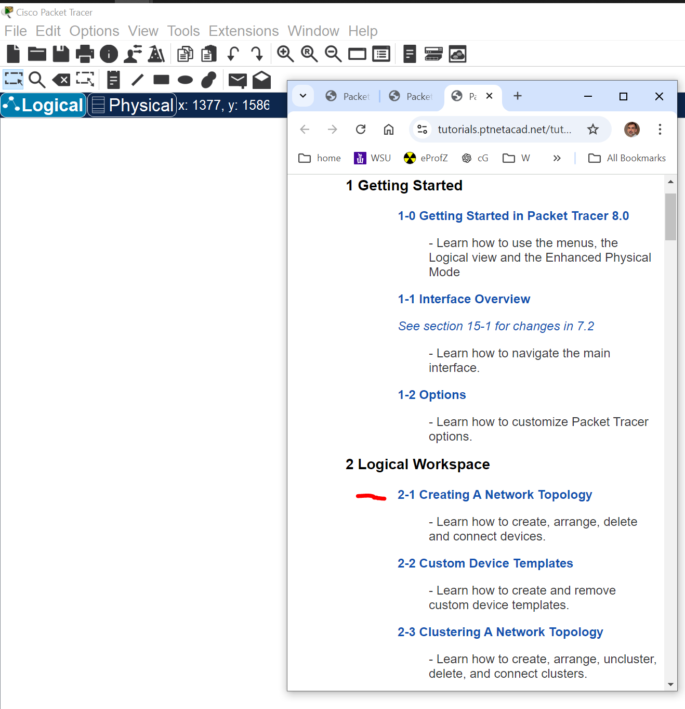
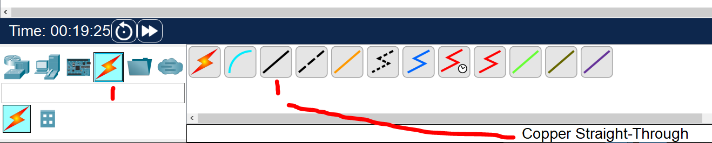

Use the course chatbot and the references provided to answer the following questions and solve the following problems.
Consult LinkedIn Learning and Wikipedia.
(50) 1.What does "promiscuous mode" mean in relation to a Network Interface Card (NIC)? Briefly explain your answer.
Wired network media often use copper cables as the media. Briefly explain the purpose of gold-plating the contacts on the ends of an Ethernet cable RJ45 plug. Reference Wikipedia: Gold Plating
(50) 2. What is the purpose of gold-plating the contacts on an Ethernet cable?
(50) 3. What medium is needed to transmit radio waves that are used in wireless communication?
(50) 4. Why is fiber-optic cable immune to electromagnetic interference?
(50) 5. What are the WiMAX protocols used for?
List three distinct applications of Bluetooth technology: (50) 6. Applications:
(50) 7. Given that a satellite signal travels at the speed of light, how long does it take for a signal to go from Earth to a GEO (Geostationary Earth Orbit) satellite and back to Earth? Show your calculations, with units.
(50) 8. Why do cellular telephone systems need only about seven sets of frequencies in a metropolitan area?
(50) 9. What is one potentially serious problem with using your personal digital assistant and Bluetooth to unlock doors wirelessly? Briefly explain. ref: Flipper Zero
Assume you are the technology guru for an interstate trucking company. You need to maintain constant contact with your fleet of trucks. (50) 10.Which wireless technologies will enable you to do this? Assume you are sitting at your desk at work, using your laptop computer. The boss calls an emergency meeting for you and several coworkers and asks everyone to bring his or her laptop computer. When you get to the meeting room, the boss wants to download an important file from his laptop to all your coworker's laptops. Think about how to solve this problem, develop three different solutions. (50) 11. List three possible media solutions that will support this download, along with an advantage and disadvantage of each.
(50) 12. Using the course chatbot determine the typical height of a terrestial microwave tower. Then, if the tower's height is increased by 10 meters, how much farther will the tower be able to transmit? Show your calculations. Note: the typical height will vary depending on your information source. What is important is assessing the effect of height on signal transmission distance. Ref: http://www.rand.org/pubs/research_memoranda/RM3762/RM3762.chap5.html
Assume your company has two non-contiguous offices located approximately one mile apart. Data needs to be transferred between the offices at speeds up to 100Mbps. Develop three possible solutions for interconnecting the networks in the two buildings. Comment on the feasibility of each proposed solution-technical, financial, political/legal.
Create an Excel spreadsheet or document that lists at least one issue in each category for each potential solution
(50) 13. Use the Snipping Tool to make a screenshot of your proposed solution.
Save the screenshot as "Ex1" in your ' ' folder. You will be combining screenshots from several exercises at the end of this assignment, just as you did in Formative00-PDF File Creation.
Do this in Somsen 301 or elsewhere with a fellow student or partner. Make sure you are both on the same network. Use your laptop or other computer to which you have administrative rights. If Professor Paulson is in Somsen 301 you can try pinging his computer, or the teaching station. Note that finding the Ethernet status box will differ depending on your version of Windows.
 Your Dialog Boxes May Look Different While pinging the other computer, record the following information, and enter it below.
(50) 14. Record the high speed, high speed reply time (ms), low speed, and low speed reply times (ms): When done return your connection speed back to Autonegotiation!
Use WireShark to examine the details of an Ethernet frame, preferably in Somsen 301 during class. You will need to work with a partner, or ask Professor Paulson. You can also attempt this in another location, as long as you have permission. Make sure to use your WSU laptop because you have administrator access. Start WireShark, follow the instructions, and enter your answers to the questions in the spaces below.  Your values will be different.
(50) 15. Examine the Ethernet II frame fields and enter the value for the Destination MAC address below: (50) 16. Examine the Ethernet II frame fields and enter the value for the NIC manufacturer below: (100) 17. Copy the text/data portion of the ICMP packet and paste it in the space below:
(100) 18. Use the Snipping Tool to make a screenshot of your WireShark application, showing the ARP data capture packets and IP addresses, similar to the screenshot below. Note that your IP addresses will be different.  Save the screenshot as "Ex2" in your ' ' folder. You will be combining screenshots from several exercises at the end of this assignment, just as you did in Formative00-PDF File Creation.
Do this in Somsen 301. Examine the network patch cable connected to the USB-C dock at your workstation. This exercise uses a wired connection, it cannot be done wirelessly.
View the indicator lights on the HP-USB-C dock. You do not have access to the network switch, which is locked away in a secure network closet.
Note there are two LED indicator lights on the network port. These lights typically indicate data activity (left light) and port speed (right light). The color of these lights (green, amber, off/none) can vary between manufacturers.
The USB-C dock mounted to the back of the Somsen 301 student workstation landscape monitor is either a HP Elite USB-C Dock, or HP Elite USB-C Dock G4. Both contain Gigabit Ethernet ports. 
Examine the wired Ethernet connection properties, the USB-C dock Ethernet connection, and answer the following questions. 
(50) 18. What Speed is your computer wired connection to the USB-C dock?: Work with a partner, or individually, to determine the purpose of each of the two LED indicator lights on the USB-C dock. Facing the RJ-45 port on the dock, write your answer below. (50) 19. Purpose of USB-C dock left LED indicator light: (50) 20. Current status of USB-C dock left indicator light. Example-off, constant green, blinking green... (50) 21. Purpose of USB-C dock right LED indicator light: (50) 22. Current status of USB-C dock right indicator light. Example-off, constant green, blinking green...
 Packet Tracer Network Topology Tutorial
Use Cisco Packet Tracer for the following lab:
Save a copy of the file, 'VL3-1.pkt' you create for this lab to your folder.
Use the course chatbot to create a physical star topology network using a hub and three PC workstations using an appropriate subnet.
192.168.2.0/24
(50) 23. Use the Snipping Tool to make a screenshot of your completed Lab showing the hub and three devices. Save the screenshot as "Ex3" in your ' ' folder. You will be combining screenshots from several exercises at the end of this assignment, just as you did in Formative00-PDF File Creation.
Use the file VL3-1.pkt created in the previous Packet Tracer lab. You must save a copy of this file, and rename it 'VL3-2.pkt' to your folder.
View the details of a packet sent from one computer to another. Note the 'Capture then Forward' icon is in the 'Simulation Panel Play Controls' to the right of the Play button.
When viewing the details about the packet in the OSI Model tab, answer the following questions.
(50) 24. How many OSI layers are involved in the packet transfer?: (50) 25. Which OSI layers are involved in the packet transfer?:
View details about the Outbound PDU. (50) 26. Briefly explain why the packet must contains the MAC addresses of the sending and receiving computers:
View the details about the IP protocol. (50) 27. Briefly explain why the packet also contains the IP addresses of the sending and receiving computers.
Use Packet Tracer to learn to connect devices using straight-through and crossover copper cables, fiber-optic cables. When done, answer the questions below. For background information please refer to the chatbot, and these articles: Ethernet crossover cables Fiber-optic cables Rollover cable console cable
 Copper Cable
(50) 28. After making the fiber-optic connection, briefly explain why a fiber-optic cable uses two separate ports to connect devices.
(50) 29. List two reasons to choose a fiber-optic cable over a copper cable. Please realize that fiber-optic cable is more expensive to deal with in terms of procurement, installation and operating equipment.
(50) 30. After connecting a rollover cable, briefly explain the purpose of a rollover cable. Is a rollover cable used to transfer data between devices like a copper or fiber-optic cable?
Use a web browser to verify that you have published your website to https://classes.winona.edu/... Check that your name, StarID, email, class, semester, section and all of your answers are correct and visible. From the menu choose File>Print... and using "Microsoft Print to PDF" save a copy of this assignment as a .pdf file in your ' ' folder.
(50) 31. Save your file 'WebPage.pdf' to the ' ' folder.
Create one .pdf (portable document format) file from the screenshots that you have taken by following these steps.
(50) 32. Save your file 'ScreenShots.pdf' to the ' ' folder.
Use PDFill to merge the WebPage.pdf file with the ScreenShots.pdf file, and save it as 'Summative03.pdf' in ' ' folder.
(50) 33. Upload your file 'Summative03.pdf' to the D2L 'Summative03' Assignment folder.
Use a browser to view your completed and published website at: https://classes.winona.edu/... Ensure that you have linked this assignment on your home page. Note that your screenshots do not have to be completed to perform this step.